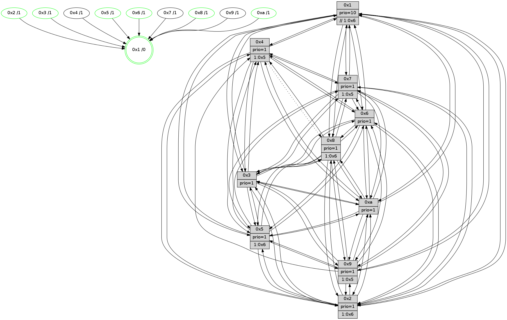

>> << IDX [start] -100 -25 -5 +0 +5 +25 +100 [1230.00289512]
 Previous packets
----------------------------------------------------------------------
1225.184119 beacon01(faad) #0 coord=01,02,03,04,05,06,07,0a,09,08 cycle=688.0ms assoc
-- color-indic=1 64 49 b5
1225.194100 beacon02(faad) #0 coord=01,02,03,04,05,06,07,0a,09,08 cycle=688.0ms assoc 64 da 84
1225.204103 beacon03(faad) #0 coord=01,02,03,04,05,06,07,0a,09,08 cycle=688.0ms assoc 64 a0 c9
1225.214101 beacon04(faad) #0 coord=01,02,03,04,05,06,07,0a,09,08 cycle=688.0ms assoc 64 d7 23
1225.224101 beacon05(faad) #0 coord=01,02,03,04,05,06,07,0a,09,08 cycle=688.0ms assoc 64 ad 6e
1225.234102 beacon06(faad) #0 coord=01,02,03,04,05,06,07,0a,09,08 cycle=688.0ms assoc 64 23 b9
1225.244103 beacon07(faad) #0 coord=01,02,03,04,05,06,07,0a,09,08 cycle=688.0ms assoc 64 59 f4
1225.254107 beacon0a(faad) #0 coord=01,02,03,04,05,06,07,0a,09,08 cycle=688.0ms assoc 64 28 ff
1225.264107 beacon09(faad) #0 coord=01,02,03,04,05,06,07,0a,09,08 cycle=688.0ms assoc 64 a6 28
1225.274107 beacon08(faad) #0 coord=01,02,03,04,05,06,07,0a,09,08 cycle=688.0ms assoc 64 dc 65
1225.285050 [Hello(1): seq=691 sym=4,2,9,5,10,3,8,6,7 sysInfo=coloring-mode-on,ColoringModeRequestCalled stat=4:10,15,2,0/2:15,4,10,3/9:10,0,2,0/5:2,9,2,7/10:3,13,1,7/3:5,9,6,8/8:6,8,1,0/6:15,8,12,15/7:4,6,5,14]
1225.288656 [Hello(5): seq=782 sym=7,6,4,3,1,9,8,10,2 sysInfo=hasWarning stat=7:13,11,13,13/6:15,6,11,3/4:14,4,5,13/3:2,0,6,15/1:10,2,6,0/9:14,15,4,9/8:10,15,2,2/10:8,7,3,8/2:13,5,8,7]
1225.291702 [Color(10) seq=371 @0:0 prio=1]
1225.294398 [Hello(6): seq=782 sym=2,3,5,4,7,9,8,10,1 sysInfo=hasWarning stat=2:6,9,2,0/3:6,8,1,13/5:15,15,4,2/4:3,13,1,5/7:12,7,12,12/9:1,15,10,9/8:13,13,5,5/10:6,14,7,12/1:8,3,7,1]
1225.297273 [Hello(3): seq=782 sym=1,7,6,2,4,8,9,10,5 sysInfo=hasWarning stat=1:6,7,5,0/7:14,8,3,12/6:4,9,0,0/2:2,10,6,0/4:14,4,6,11/8:7,5,0,4/9:15,8,9,15/10:0,1,0,4/5:12,13,13,0]
1225.300881 [Color(6) seq=414 @0:0 prio=1]
1225.304387 [Color(3) seq=411 @0:0 prio=1]
1225.306107 [Color(2) seq=358 @0:0 prio=1 >1.@6,1.@7,1.@8,1.@9]
----------------------------------------------------------------------
1225.972252 beacon01(faad) #0 coord=01,02,03,04,05,06,07,0a,09,08 cycle=688.0ms assoc
-- color-indic=1 64 f5 b0
1225.982234 beacon02(faad) #0 coord=01,02,03,04,05,06,07,0a,09,08 cycle=688.0ms assoc 64 66 81
1225.992236 beacon03(faad) #0 coord=01,02,03,04,05,06,07,0a,09,08 cycle=688.0ms assoc 64 1c cc
1226.002235 beacon04(faad) #0 coord=01,02,03,04,05,06,07,0a,09,08 cycle=688.0ms assoc 64 6b 26
1226.012235 beacon05(faad) #0 coord=01,02,03,04,05,06,07,0a,09,08 cycle=688.0ms assoc 64 11 6b
1226.022236 beacon06(faad) #0 coord=01,02,03,04,05,06,07,0a,09,08 cycle=688.0ms assoc 64 9f bc
1226.032235 beacon07(faad) #0 coord=01,02,03,04,05,06,07,0a,09,08 cycle=688.0ms assoc 64 e5 f1
1226.042242 beacon0a(faad) #0 coord=01,02,03,04,05,06,07,0a,09,08 cycle=688.0ms assoc 64 94 fa
1226.052240 beacon09(faad) #0 coord=01,02,03,04,05,06,07,0a,09,08 cycle=688.0ms assoc 64 1a 2d
1226.062241 beacon08(faad) #0 coord=01,02,03,04,05,06,07,0a,09,08 cycle=688.0ms assoc 64 60 60
1226.074037 [Hello(7): seq=782 sym=2,3,5,6,4,8,9,10,1 sysInfo=hasWarning stat=2:10,2,0,2/3:2,9,2,1/5:2,0,13,2/6:1,15,15,10/4:15,3,10,1/8:4,6,1,0/9:5,6,1,0/10:9,13,2,6/1:11,9,4,0]
1226.080504 [Color(8) seq=381 @0:0 prio=1 >1.@6,1.@7,1.@9,1.@a]
1226.083018 [Hello(10): seq=715 sym=6,2,3,8,7,5,9,4,1 sysInfo=hasWarning stat=6:0,7,2,2/2:3,1,6,11/3:4,15,9,12/8:6,10,15,2/7:8,10,8,6/5:2,10,0,15/9:0,15,10,3/4:11,9,8,0/1:9,11,2,1]
1226.085599 [Color(1) seq=463 @0:0 prio=10 >>1.@6,1.@7,1.@8]
1226.087259 [Hello(4): seq=782 sym=5,7,6,2,3,9,10,1 asym=8 sysInfo= stat=5:4,9,4,0/7:7,15,8,1/6:4,7,9,13/2:10,11,0,15/3:3,2,10,13/9:12,14,11,11/10:5,11,0,14/1:2,13,6,1/8:2,7,1,0]
1226.090911 [Color(5) seq=358 @0:0 prio=1 >1.@6,1.@7,1.@8,1.@9]
----------------------------------------------------------------------
1226.760385 beacon01(faad) #0 coord=01,02,03,04,05,06,07,0a,09,08 cycle=688.0ms assoc
-- color-indic=1 64 31 be
1226.770368 beacon02(faad) #0 coord=01,02,03,04,05,06,07,0a,09,08 cycle=688.0ms assoc 64 a2 8f
1226.780368 beacon03(faad) #0 coord=01,02,03,04,05,06,07,0a,09,08 cycle=688.0ms assoc 64 d8 c2
1226.790368 beacon04(faad) #0 coord=01,02,03,04,05,06,07,0a,09,08 cycle=688.0ms assoc 64 af 28
1226.800368 beacon05(faad) #0 coord=01,02,03,04,05,06,07,0a,09,08 cycle=688.0ms assoc 64 d5 65
1226.810368 beacon06(faad) #0 coord=01,02,03,04,05,06,07,0a,09,08 cycle=688.0ms assoc 64 5b b2
1226.820369 beacon07(faad) #0 coord=01,02,03,04,05,06,07,0a,09,08 cycle=688.0ms assoc 64 21 ff
1226.830376 beacon0a(faad) #0 coord=01,02,03,04,05,06,07,0a,09,08 cycle=688.0ms assoc 64 50 f4
1226.840374 beacon09(faad) #0 coord=01,02,03,04,05,06,07,0a,09,08 cycle=688.0ms assoc 64 de 23
1226.850374 beacon08(faad) #0 coord=01,02,03,04,05,06,07,0a,09,08 cycle=688.0ms assoc 64 a4 6e
1226.862558 [Hello(1): seq=692 sym=4,2,9,5,10,3,8,6,7 sysInfo=coloring-mode-on,ColoringModeRequestCalled stat=4:11,15,2,0/2:15,5,10,3/9:10,0,2,0/5:3,10,2,7/10:3,14,1,7/3:6,10,6,8/8:6,8,1,0/6:0,9,12,15/7:5,6,5,14]
1226.865284 [Color(10) seq=372 @0:0 prio=1]
1226.866582 [Hello(3): seq=783 sym=1,7,6,2,4,8,9,10,5 sysInfo=hasWarning stat=1:7,8,5,0/7:15,8,3,12/6:4,9,0,0/2:2,11,6,0/4:15,4,6,11/8:8,6,0,4/9:15,8,9,15/10:1,1,0,4/5:13,14,13,0]
1226.870056 [Color(3) seq=412 @0:0 prio=1]
1226.871544 [Hello(2): seq=779 sym=4,5,7,6,3,9,8,10,1 sysInfo=hasWarning stat=4:5,9,12,11/5:14,7,15,1/7:14,5,13,14/6:4,8,1,1/3:9,12,13,10/9:5,10,5,8/8:3,8,11,11/10:8,0,5,10/1:9,6,2,0]
1226.875232 [STC(1) #0.196 tree-change,inconsistent-stability,stable,to-color d=0]
1226.878843 [Hello(6): seq=783 sym=2,3,5,4,7,9,8,10,1 sysInfo=hasWarning stat=2:6,10,2,0/3:6,9,1,13/5:0,0,4,2/4:4,13,1,5/7:13,7,12,12/9:1,15,10,9/8:14,14,5,5/10:7,14,7,12/1:9,4,7,1]
1226.881654 [Color(6) seq=415 @0:0 prio=1]
1226.889045 [Color(2) seq=359 @0:0 prio=1 >1.@6,1.@7,1.@8,1.@9]
----------------------------------------------------------------------
1227.548515 beacon01(faad) #0 coord=01,02,03,04,05,06,07,0a,09,08 cycle=688.0ms assoc
-- color-indic=1 64 8d bb
1227.558497 beacon02(faad) #0 coord=01,02,03,04,05,06,07,0a,09,08 cycle=688.0ms assoc 64 1e 8a
1227.568497 beacon03(faad) #0 coord=01,02,03,04,05,06,07,0a,09,08 cycle=688.0ms assoc 64 64 c7
1227.578498 beacon04(faad) #0 coord=01,02,03,04,05,06,07,0a,09,08 cycle=688.0ms assoc 64 13 2d
1227.588498 beacon05(faad) #0 coord=01,02,03,04,05,06,07,0a,09,08 cycle=688.0ms assoc 64 69 60
1227.598497 beacon06(faad) #0 coord=01,02,03,04,05,06,07,0a,09,08 cycle=688.0ms assoc 64 e7 b7
1227.608501 beacon07(faad) #0 coord=01,02,03,04,05,06,07,0a,09,08 cycle=688.0ms assoc 64 9d fa
1227.618502 beacon0a(faad) #0 coord=01,02,03,04,05,06,07,0a,09,08 cycle=688.0ms assoc 64 ec f1
1227.628486 beacon09(faad) #0 coord=01,02,03,04,05,06,07,0a,09,08 cycle=688.0ms assoc 64 62 26
1227.638503 beacon08(faad) #0 coord=01,02,03,04,05,06,07,0a,09,08 cycle=688.0ms assoc 64 18 6b
1227.650444 [STC(3)->1 #0.196 tree-change,inconsistent-stability,stable,to-color d=1]
1227.651804 [Hello(9): seq=727 sym=2,5,3,4,7,6,8,10,1 sysInfo=hasWarning stat=2:15,13,3,9/5:6,0,4,6/3:14,6,10,1/4:10,14,3,0/7:12,7,7,1/6:11,3,0,12/8:9,9,4,3/10:3,12,8,4/1:7,3,9,1]
1227.654649 [STC(9)->1 #0.196 to-color d=1]
1227.656569 [Color(5) seq=359 @0:0 prio=1 >1.@6,1.@7,1.@8,1.@9]
1227.659450 [Hello(8): seq=727 sym=5,2,3,7,9,6,4,10,1 sysInfo=hasWarning stat=5:11,5,8,0/2:6,9,7,11/3:14,13,11,1/7:7,9,1,0/9:13,7,10,3/6:13,11,10,14/4:1,1,0,0/10:7,1,14,4/1:8,8,7,0]
1227.661980 [Hello(7): seq=783 sym=2,3,5,6,4,8,9,10,1 sysInfo=hasWarning stat=2:11,3,0,2/3:3,10,2,1/5:2,1,13,2/6:2,0,15,10/4:0,3,10,1/8:5,7,1,0/9:5,6,1,0/10:10,14,2,6/1:12,10,5,0]
1227.664985 [Hello(10): seq=716 sym=6,2,3,8,7,5,9,4,1 sysInfo=hasWarning stat=6:1,8,2,2/2:4,1,6,11/3:5,0,9,12/8:6,10,15,2/7:8,10,8,6/5:2,11,0,15/9:0,15,10,3/4:12,9,8,0/1:10,12,3,1]
1227.669706 [STC(10)->1 #0.196 tree-change,inconsistent-stability,stable,to-color d=1]
1227.671165 [STC(8)->1 #0.196 tree-change,inconsistent-stability,stable,to-color d=1]
1227.672719 [Color(1) seq=464 @0:0 prio=10 >>1.@6,1.@7,1.@8]
1227.677249 [Color(8) seq=382 @0:0 prio=1 >1.@6,1.@7,1.@9,1.@a]
1227.679144 [Hello(4): seq=783 sym=5,7,6,2,3,10,1 asym=8 sysInfo= stat=5:4,10,4,0/7:7,15,8,1/6:5,8,9,13/2:11,12,0,15/3:4,3,10,13/10:5,12,0,14/1:3,13,7,1/8:2,7,1,0]
1227.681536 [STC(7)->1 #0.196 to-color d=1]
1227.684263 [STC(4)->1 #0.196 to-color d=1]
----------------------------------------------------------------------
1228.336645 beacon01(faad) #0 coord=01,02,03,04,05,06,07,0a,09,08 cycle=688.0ms assoc
-- color-indic=1 64 59 8e
1228.346629 beacon02(faad) #0 coord=01,02,03,04,05,06,07,0a,09,08 cycle=688.0ms assoc 64 ca bf
1228.356627 beacon03(faad) #0 coord=01,02,03,04,05,06,07,0a,09,08 cycle=688.0ms assoc 64 b0 f2
1228.366627 beacon04(faad) #0 coord=01,02,03,04,05,06,07,0a,09,08 cycle=688.0ms assoc 64 c7 18
1228.376629 beacon05(faad) #0 coord=01,02,03,04,05,06,07,0a,09,08 cycle=688.0ms assoc 64 bd 55
1228.386630 beacon06(faad) #0 coord=01,02,03,04,05,06,07,0a,09,08 cycle=688.0ms assoc 64 33 82
1228.396629 beacon07(faad) #0 coord=01,02,03,04,05,06,07,0a,09,08 cycle=688.0ms assoc 64 49 cf
1228.406632 beacon0a(faad) #0 coord=01,02,03,04,05,06,07,0a,09,08 cycle=688.0ms assoc 64 38 c4
1228.416634 beacon09(faad) #0 coord=01,02,03,04,05,06,07,0a,09,08 cycle=688.0ms assoc 64 b6 13
1228.426634 beacon08(faad) #0 coord=01,02,03,04,05,06,07,0a,09,08 cycle=688.0ms assoc 64 cc 5e
1228.438177 [Hello(5): seq=784 sym=7,6,4,3,1,9,8,10,2 sysInfo=hasWarning stat=7:15,11,14,13/6:0,7,11,3/4:15,4,6,13/3:3,1,7,15/1:10,3,6,0/9:15,15,4,9/8:11,0,3,2/10:9,7,4,8/2:14,6,8,7]
1228.441198 [Hello(1): seq=693 sym=4,2,9,5,10,3,8,6,7 sysInfo=coloring-mode-on,ColoringModeRequestCalled stat=4:12,15,3,0/2:15,5,10,3/9:11,0,2,0/5:3,10,2,7/10:3,14,1,7/3:6,10,7,8/8:6,9,1,0/6:1,10,12,15/7:5,6,6,14]
1228.447389 [Color(2) seq=360 @0:0 prio=1 >1.@6,1.@7,1.@8,1.@9]
1228.449566 [Color(3) seq=413 @0:0 prio=1]
1228.453164 [Color(10) seq=373 @0:0 prio=1]
1228.455341 [Hello(6): seq=784 sym=2,3,5,4,7,9,8,10,1 sysInfo=hasWarning stat=2:6,10,2,0/3:6,9,2,13/5:0,1,4,2/4:5,13,2,5/7:14,7,13,12/9:2,15,11,9/8:15,15,6,5/10:8,15,8,12/1:10,5,7,1]
1228.460078 [Color(6) seq=416 @0:0 prio=1]
----------------------------------------------------------------------
1229.124775 beacon01(faad) #0 coord=01,02,03,04,05,06,07,0a,09,08 cycle=688.0ms assoc
-- color-indic=1 64 e5 8b
1229.134756 beacon02(faad) #0 coord=01,02,03,04,05,06,07,0a,09,08 cycle=688.0ms assoc 64 76 ba
1229.144759 beacon03(faad) #0 coord=01,02,03,04,05,06,07,0a,09,08 cycle=688.0ms assoc 64 0c f7
1229.154758 beacon04(faad) #0 coord=01,02,03,04,05,06,07,0a,09,08 cycle=688.0ms assoc 64 7b 1d
1229.164757 beacon05(faad) #0 coord=01,02,03,04,05,06,07,0a,09,08 cycle=688.0ms assoc 64 01 50
1229.174759 beacon06(faad) #0 coord=01,02,03,04,05,06,07,0a,09,08 cycle=688.0ms assoc 64 8f 87
1229.184759 beacon07(faad) #0 coord=01,02,03,04,05,06,07,0a,09,08 cycle=688.0ms assoc 64 f5 ca
1229.194764 beacon0a(faad) #0 coord=01,02,03,04,05,06,07,0a,09,08 cycle=688.0ms assoc 64 84 c1
1229.204762 beacon09(faad) #0 coord=01,02,03,04,05,06,07,0a,09,08 cycle=688.0ms assoc 64 0a 16
1229.214762 beacon08(faad) #0 coord=01,02,03,04,05,06,07,0a,09,08 cycle=688.0ms assoc 64 70 5b
1229.225949 [Hello(9): seq=728 sym=2,5,3,4,7,6,8,10,1 sysInfo=hasWarning stat=2:0,14,3,9/5:7,1,4,6/3:14,7,10,1/4:11,14,4,0/7:13,7,8,1/6:12,4,0,12/8:10,10,5,3/10:4,13,9,4/1:8,4,9,1]
1229.230217 [Hello(4): seq=784 sym=5,7,6,2,3,10,1 asym=8 sysInfo= stat=5:5,10,4,0/7:7,15,9,1/6:6,9,9,13/2:12,13,0,15/3:4,4,10,13/10:5,13,0,14/1:4,13,7,1/8:2,7,1,0]
1229.232937 [Color(5) seq=360 @0:0 prio=1 >1.@6,1.@7,1.@8,1.@9]
1229.238242 [Hello(10): seq=717 sym=6,2,3,8,7,5,9,4,1 sysInfo=hasWarning stat=6:2,9,2,2/2:4,1,6,11/3:5,0,9,12/8:6,11,0,2/7:8,10,9,6/5:3,11,0,15/9:0,15,10,3/4:13,9,9,0/1:10,13,3,1]
1229.242186 [Hello(7): seq=784 sym=2,3,5,6,4,8,9,10,1 mpr= sysInfo=hasWarning stat=2:12,4,0,2/3:3,11,2,1/5:3,1,13,2/6:3,1,15,10/4:0,3,11,1/8:5,7,1,0/9:5,6,1,0/10:10,15,2,6/1:13,10,5,0]
1229.249970 [Hello(8): seq=728 sym=5,2,3,7,9,6,4,10,1 sysInfo=hasWarning stat=5:12,5,8,0/2:7,10,7,11/3:14,14,12,1/7:7,9,2,0/9:14,7,10,3/6:14,12,10,14/4:2,1,1,0/10:7,2,14,4/1:9,8,7,0]
1229.254718 [Color(8) seq=383 @0:0 prio=1 >1.@6,1.@7,1.@9,1.@a]
----------------------------------------------------------------------
1229.912905 beacon01(faad) #0 coord=01,02,03,04,05,06,07,0a,09,08 cycle=688.0ms assoc
-- color-indic=1 64 21 85
1229.922887 beacon02(faad) #0 coord=01,02,03,04,05,06,07,0a,09,08 cycle=688.0ms assoc 64 b2 b4
1229.932888 beacon03(faad) #0 coord=01,02,03,04,05,06,07,0a,09,08 cycle=688.0ms assoc 64 c8 f9
1229.942887 beacon04(faad) #0 coord=01,02,03,04,05,06,07,0a,09,08 cycle=688.0ms assoc 64 bf 13
1229.952888 beacon05(faad) #0 coord=01,02,03,04,05,06,07,0a,09,08 cycle=688.0ms assoc 64 c5 5e
1229.962888 beacon06(faad) #0 coord=01,02,03,04,05,06,07,0a,09,08 cycle=688.0ms assoc 64 4b 89
1229.972889 beacon07(faad) #0 coord=01,02,03,04,05,06,07,0a,09,08 cycle=688.0ms assoc 64 31 c4
1229.982892 beacon0a(faad) #0 coord=01,02,03,04,05,06,07,0a,09,08 cycle=688.0ms assoc 64 40 cf
1229.992892 beacon09(faad) #0 coord=01,02,03,04,05,06,07,0a,09,08 cycle=688.0ms assoc 64 ce 18